원신의 탐사 영상을 프레임 단위로 보며 공간 배치, 동선, 퍼즐이 어떤 순서로 열리는지 정리했습니다. 남쪽 입구의 계단식 광장에서 시작해 십자형 대성당, 북쪽 설원 정원, 동쪽 고리 다리를 지나 옥상까지 올라가는 구조를 블록아웃 메쉬로 거의 그대로 재현했습니다.
원작에 있는 퍼즐 기믹은 동작 방식을 관찰해서 만들고, 원작에 없는 부분은 이 성에 어울리게 새로 설계했습니다. 마지막 옥상에는 성을 점령한 최종 보스 ‘서리고룡’을 넣었습니다.
Portfolio · 원신 맵 레벨 디자인 재구성
얼어붙은 왕좌의 성을 한 칸씩 다시 쌓았습니다. 원신 7.0 스네즈나야의 ‘하얀 왕관궁’을 레이아웃·동선·퍼즐 단위로 분해하고, Unreal Engine에서 플레이 가능한 레벨로 재구성했습니다.
HIGHLIGHT
GOAL
원신의 탐사 영상을 프레임 단위로 보며 공간 배치, 동선, 퍼즐이 어떤 순서로 열리는지 정리했습니다. 남쪽 입구의 계단식 광장에서 시작해 십자형 대성당, 북쪽 설원 정원, 동쪽 고리 다리를 지나 옥상까지 올라가는 구조를 블록아웃 메쉬로 거의 그대로 재현했습니다.
원작에 있는 퍼즐 기믹은 동작 방식을 관찰해서 만들고, 원작에 없는 부분은 이 성에 어울리게 새로 설계했습니다. 마지막 옥상에는 성을 점령한 최종 보스 ‘서리고룡’을 넣었습니다.
FLOW
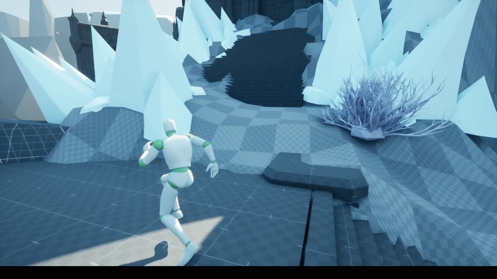
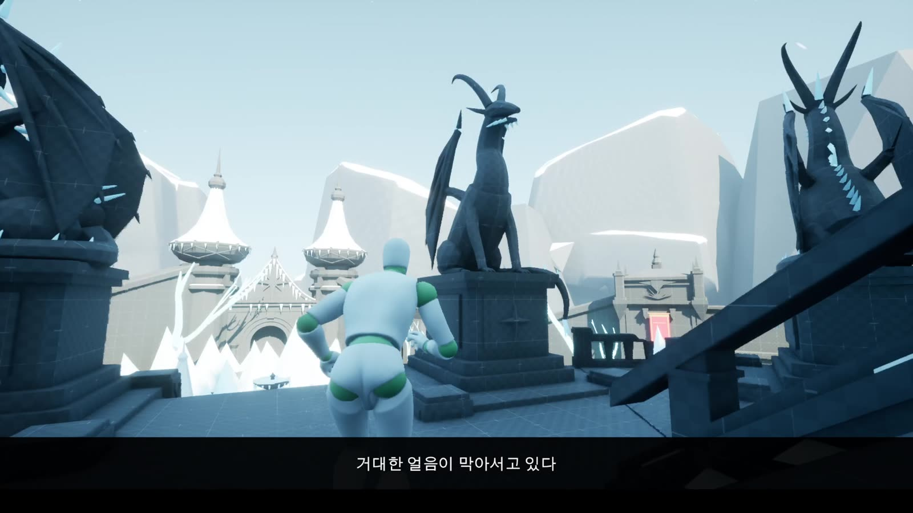
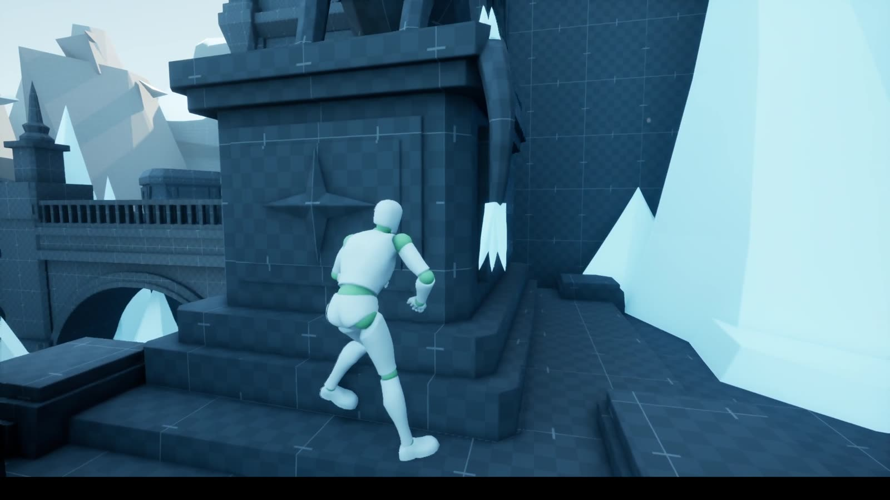
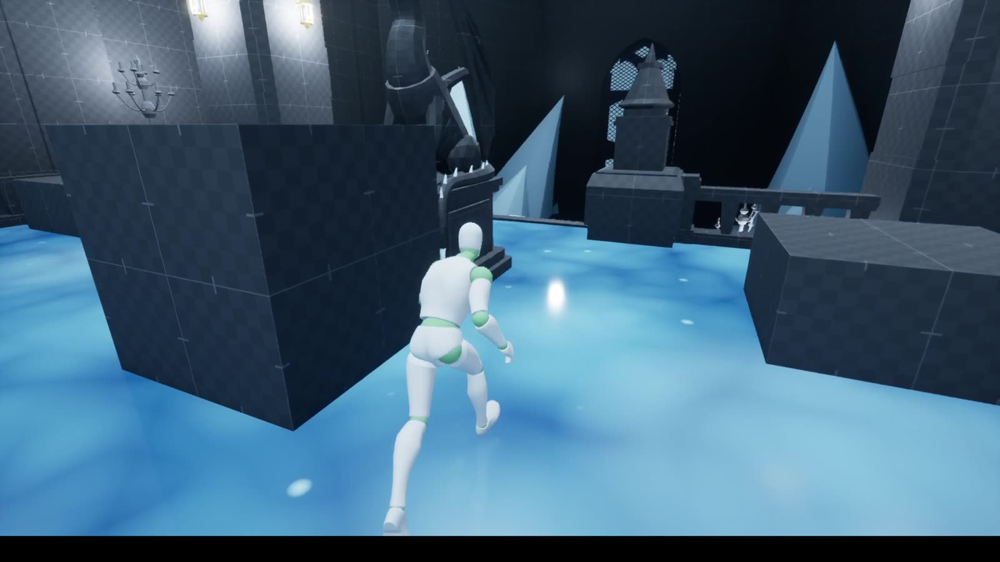
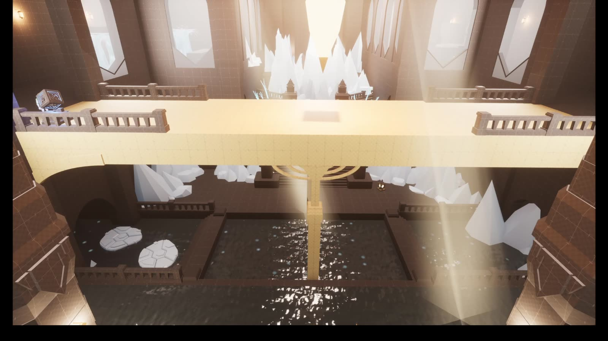
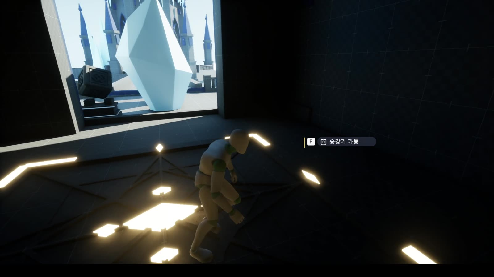
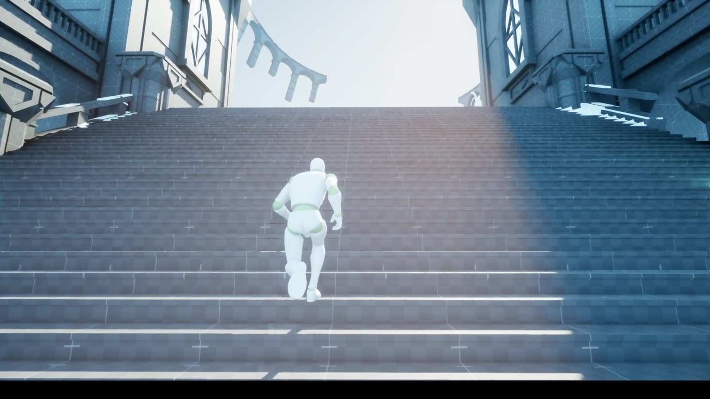
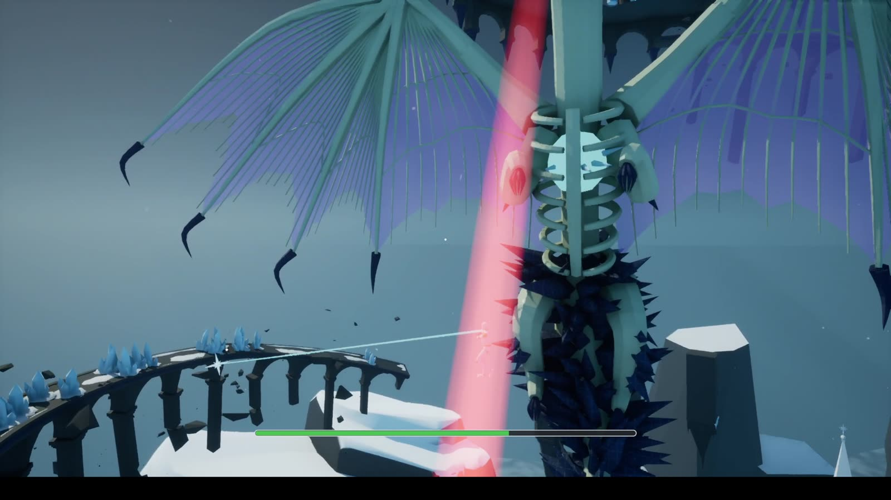
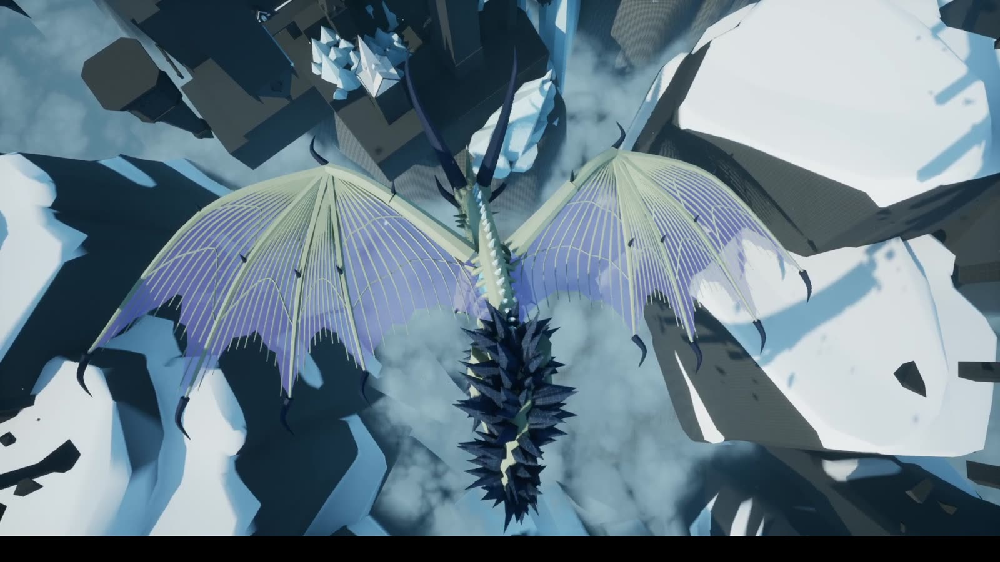
GIMMICKS
| 석상 회전 퍼즐 | F로 석상을 시계 방향 90°씩 돌립니다. 모든 석상이 정답 방향이 되면 컨트롤을 회수하고 컷신 카메라로 전환한 뒤, 길을 막던 얼음 덩어리가 산산조각 납니다. |
|---|---|
| 서리 판 석상 밀기 | 서리 바람이 감싼 발판 위로 석상을 밀어 올리고 방향을 맞추면 성공. 성공하면 천장에서 샹들리에가 내려오거나 얼음이 녹습니다. |
| 온도 샹들리에 | 얼음 투사체로 샹들리에를 맞혀 켜고 끕니다. 꺼지면 방 전체 조명이 차갑게, 켜지면 따뜻하게 바뀌어 방의 ‘냉방 / 난방’ 상태가 됩니다. |
| 기후 컨버전 | 난방이면 얼음 바닥이 얕은 물로 녹고 얼음 벽이 사라지며, 냉방으로 돌리면 다시 얼어붙습니다. 물기둥도 냉방에선 통과할 수 없는 얼음이 되고, 투사체 한 발에 부서집니다. |
| 유빙 · 물기둥 발판 | 밟으면 2초 뒤 부서지고 3초 뒤 복구되는 유빙. 얼음 기둥이 부서지면 그 위의 발판과 석상이 중력으로 떨어집니다. |
| 로프 앵커 | 우클릭으로 조준해 앵커에 대면 UI가 뜨고, 좌클릭으로 빛의 로프를 걸어 포물선을 그리며 건너편 발판에 착지합니다. |
| 다리 붕괴 · 용 플라이바이 | 처음 밟으면 서리고룡이 화면을 가로지르며 얼음 덩어리를 떨어뜨려 다리를 무너뜨립니다. 자막으로 “다른 길을 찾아보자”를 안내하고, 그때 로프 앵커가 나타납니다. |
| 승강기 · 호출 스위치 | F로 승강기를 가동합니다. 타고 올라가는 중에도 이동할 수 있고, 승강기가 위에 있을 때만 아래의 호출 스위치가 작동합니다. |
| 힌트 메모 · 열쇠 | 희미한 빛기둥이 있는 메모를 읽으면 퍼즐 힌트 자막이 나옵니다. ‘옛 왕의 열쇠’를 얻으면 다음 구역이 열립니다. |
| 지역명 · 늑대 AI | 구역에 들어서면 원신처럼 지역명이 화면 위쪽에 떠오릅니다. 늑대는 어슬렁거리다 플레이어를 보면 달려오고, 투사체 3발에 쓰러집니다. |
DESIGN POINT
모듈형
퍼즐 매니저에 석상 목록, 정답 각도, 컷신 카메라, 사라질 오브젝트를 넣기만 하면 같은 퍼즐을 다른 방에 다시 배치할 수 있게 했습니다.
컨버전
냉방·난방 상태에 따라 오브젝트가 제거되고 생성되는 구조를 한 번 만들어, 다음 방의 메인 기믹으로 그대로 확장했습니다.
연출
퍼즐을 풀면 컨트롤 회수 → 컷신 카메라 → 이벤트 → 페이드 후 복귀가 같은 리듬으로 흘러, 보상 순간을 또렷하게 했습니다.
AI 활용 · 제작 보조
레이아웃, 배치, 기믹의 규칙과 수치는 직접 정했습니다. 블루프린트 구현과 블록아웃 메쉬 제작은 Claude(Opus 5.5)에 Unreal MCP와 Blender MCP를 연결해 제작 보조로 쓰면서 지시하고, 결과를 플레이해 보며 수정을 요청했습니다.
예를 들어 승강기는 “올라가는 중에도 이동 가능하게”, 로프 앵커는 “우클릭 홀드 상태로 갖다 대면 UI, 좌클릭으로 이동”처럼 플레이 감각 단위로 요구 사항을 주고, 테스트 결과에 맞춰 수치를 직접 조정했습니다.
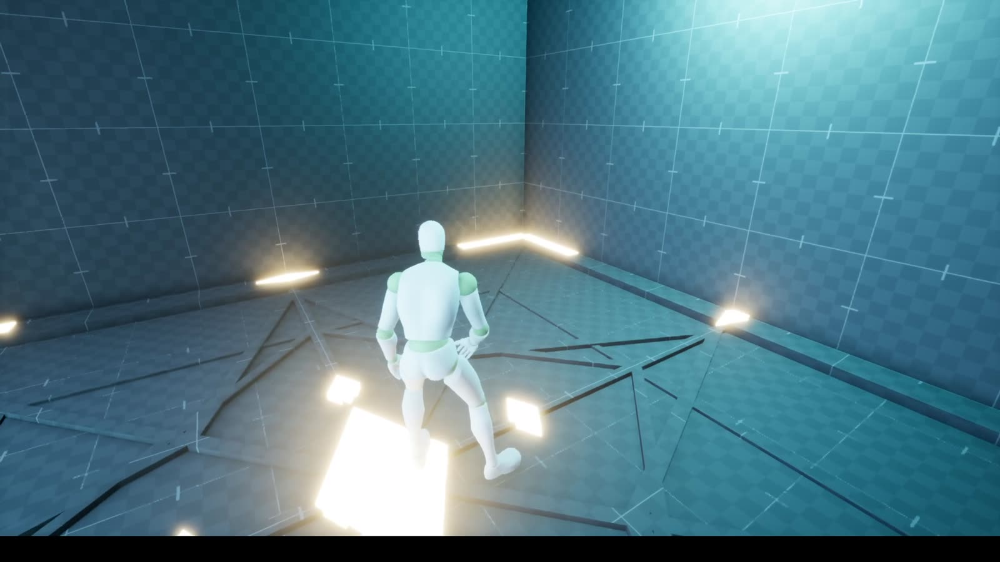
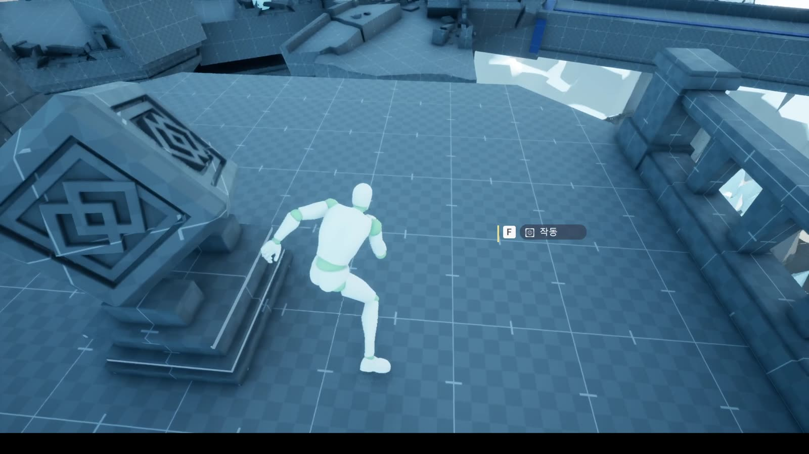
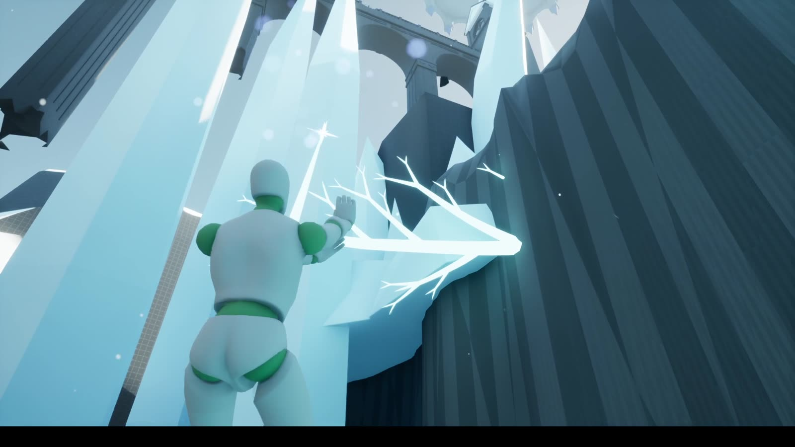